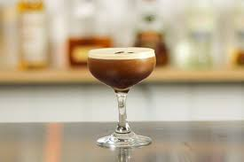

Traguitos para cerrar...o para seguir porque es temprano.
¿Estuvo rica la cena con los tragos? Me imagino que si, pero bueno todo llega a su fin, aunque para nosotros todavia falta, hay que beber unos tragos para cerrar la cena.

¿En cuantas reuniones te ofrecen un cafè despues de comer? Y, ¿Si te digo que podemos hacer una mezcla de ambos mundos? Vamos a ver la receta del gran Espresso Martini, coctel creado en los años `80. Bastante nuevo pero que rapidamente dio la vuelta al mundo.
Como primer punto, agarramos una copa coctel, esa copa conocida por no llevar hielo y que todos vimos en los martinis de peliculas como las de James Bond. Vamos a llenarla de hielo y dejarla a un lado
En nuestra coctelera colocamos unos 30ml de cafe espreso.
Agremos 30ml de licor de cafe
A esto le sumamos 30ml de vodka neutro
Seguimos por agregar 15ml de almibar simple o una cucharadita de azucar en su defecto
Batimos en la coctelera con hielo
Descartamos el hielo de nuestra copa, viendo como queda bien helada y bertemos nuestro trago dentro de la copa
Vamos a proseguir con el cafe irlandes! El origen de este trago no es muy claro. Se habla de los años `40 y los `50 con dos historias diferentes, pero aca estamos para tomar los tragos, no estudiarlos.
En el vaso que usaremos, colocamos 45ml de whiskey irlandes.
Agregamos azucar a gusto, lo recomendable es agregar dos cuacharaditas.
Completamos con cafe recien hecho, dejando un dedo de espacio./li>
Y agregamos un poco crema por encima para finalizar este trago.
Para finalizar este gran recetario, les traemos el Lemon Champ.
En una licuadora colocamos 750ml de vino espumante.
Sumamos 250gr de helado de limon.
Ahora mezclamos los ingredientes hasta que queden bien integrados.